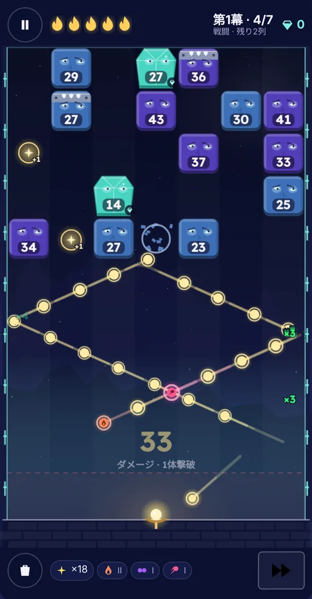
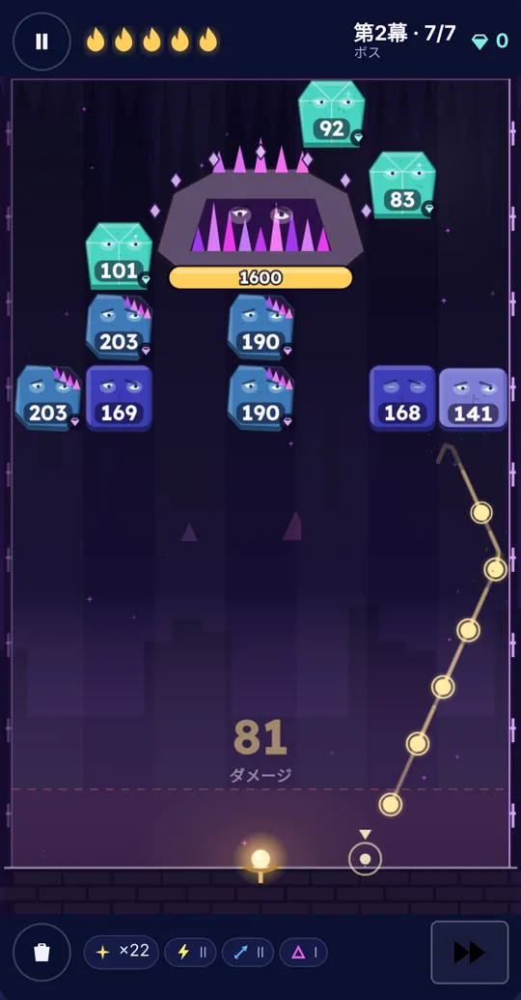
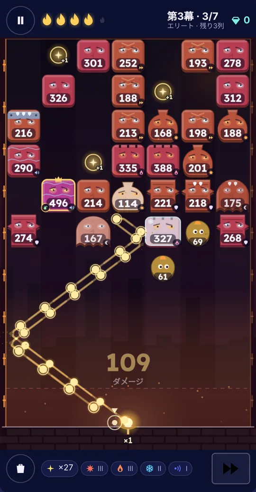
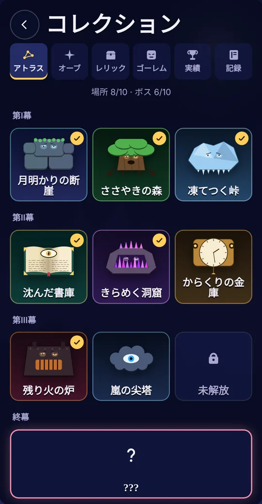
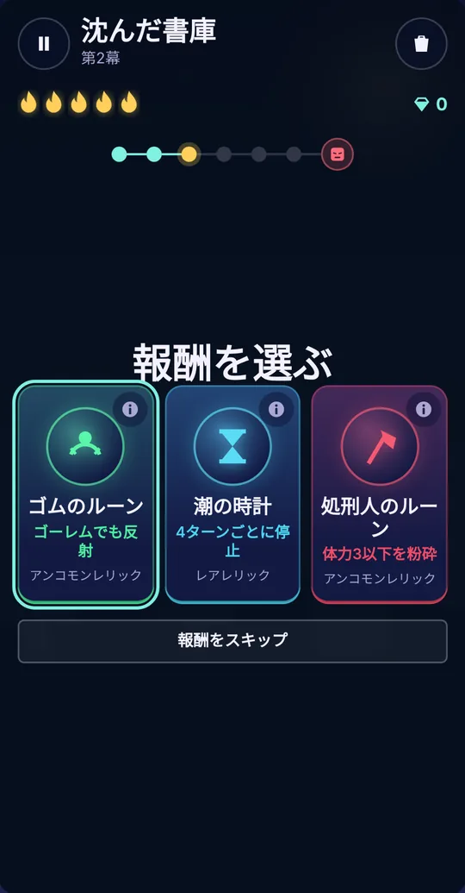

Caromancer
跳ね返るたびに、魔法は強くなる。
片手で遊べるターン制ローグライト。ドラッグで狙って指を離せば、オーブがルーン刻みのゴーレムの群れを跳ね回ります。
App Store近日公開
Google Play近日公開

1ターンの流れ
狙う
盤面のどこでもドラッグ。照準線が最初の跳ね返り先を教えてくれます。
跳ね返す
壁や天井で跳ね返るたびに反射が1つ増え、そのオーブのダメージが+50%。
打ち砕く
一斉射のあと、ゴーレムが1列下りてきます。ランタンに届く前にフロアを片付けよう。
10の場所、10体のボス
各ランは、守護者を倒すと開かれていく10の場所から選ばれた三つの幕を進みます。場所ごとに固有のゴーレムとボスが待ち受けます。殻が再生する晶洞の女王、ダメージを巻き戻す時計職人、照準線を呑み込む虚ろな星。




手に負えないほど強いビルドへ
戦闘の合間に14種のオーブと42種のレリックから選択。分裂する双子、連鎖する雷、爆発する新星、反射を溜めて飛び出す彗星。重ね続ければ、一斉射で数千ダメージも。
公平な設計
- スタミナなし、待ち時間なし、ガチャなし。
- 広告はあなたが選んだときだけ。ランの再点火や星明かり2倍に使えます。
- ゲームに影響するものは、すべて遊んで手に入れます。
- 完全オフライン。アカウント不要。
何度でも遊べる
6人のヒーロー、10段階の蝕、デイリーリフト、週替わりチャレンジ、ボスラッシュ、6つの試練、エンドレスモード、39の実績、ヒーローごとのマスタリー、共有できるシードコード、13のオーブスタイル。English、Español、Português、Français、Deutsch、日本語に対応。
App Store近日公開
Google Play近日公開